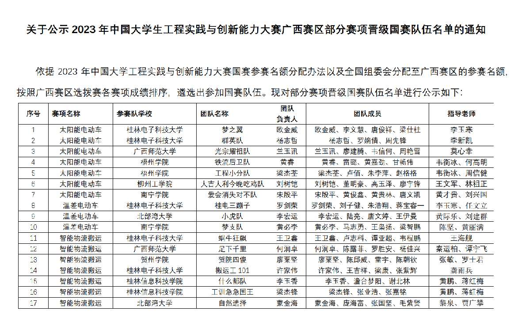

△工创赛官方公示文件
两支来自桂信科的团队在工创赛智能物流赛道中成功晋级国赛。这两支团队展现出了卓越的创新能力和团队协作精神，他们在赛道中呈现出了令人瞩目的表现。
桂林信息科技学院作为一所以工程为主要特色的高校，注重培养学生的实践能力和创新精神。在这次工创赛智能物流赛道中，桂信科派出了多支队伍参赛，其中两支队伍成功晋级国赛，为学校争光。
这两支晋级的队伍在比赛中展现出了扎实的专业知识和创新思维。他们运用先进的技术和智能系统，设计出了高效的物流方案，旨在解决物流行业中存在的问题，提高物流效率。他们的创意和创新解决方案在评委和观众中引起了广泛关注和赞赏。
此外，桂信科为这些参赛团队提供了良好的指导和支持。学校鼓励学生积极参与各类创新创业活动，并提供必要的资源和指导，帮助学生在实践中锻炼和提升自己的能力。
晋级国赛对于这两支团队来说是一个巨大的鼓励和肯定。他们将继续努力改进和完善自己的创新项目，为物流行业的发展做出更大的贡献。同时，这也将为桂信科在工创赛中的声誉增添新的光彩，激励更多的学生参与到创新创业的实践中来。